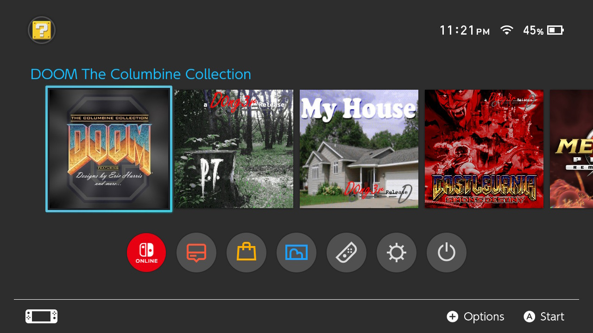

This is a curated, standalone GZDoom collection package for the Switch.
Maps included and created by Eric Harris are:
Additionally, there is a single wad file that has all maps combined into one ("REB All in One"). I included "ColumbineDOOM2" as well simply due to relevance. Neither of these two files were created by Eric Harris himself.
Please refer to the supplementary documentation files provided within the download for additional information.
Only tested on AMS 16.0.2 and 16.0.3.